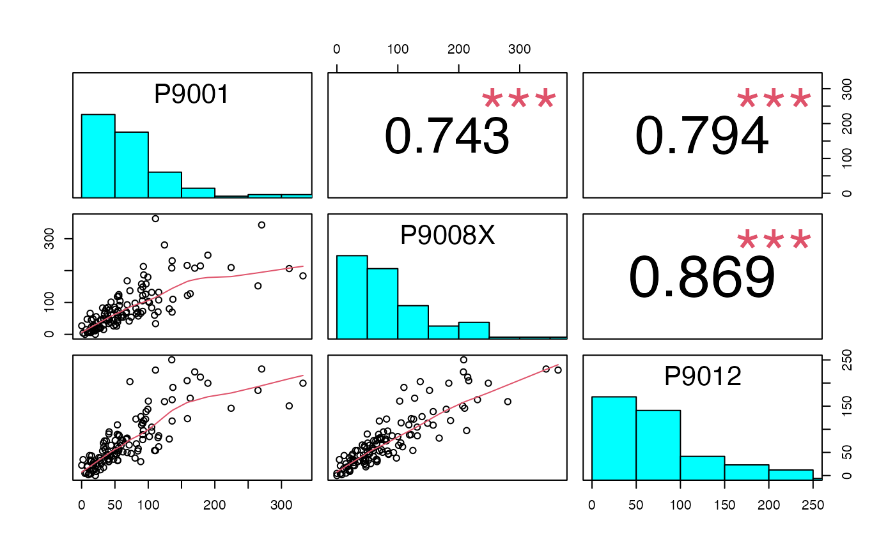
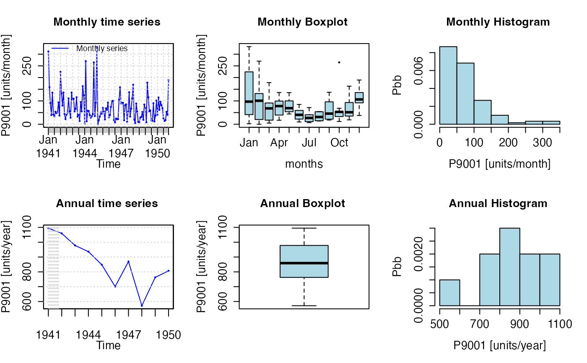

Management, analysis, and plot of hydrological time series, with focus on hydrological modelling
hydroTSM-package.RdS3 functions for management, analysis, interpolation and plotting of time series used in hydrology and related environmental sciences. In particular, this package is highly oriented to hydrological modelling tasks. The focus of this package has been put in providing a collection of tools useful for the daily work of hydrologists (although an effort was made to optimise each function as much as possible, functionality has had priority over speed). Bugs / comments / questions / collaboration of any kind are very welcomed, and in particular, datasets that can be included in this package for academic purposes.
Details
| Package: | hydroTSM |
| Type: | Package |
| Version: | 0.8-0 |
| Date: | 2026-04-27 |
| License: | GPL >= 2 |
| LazyLoad: | yes |
| Packaged: | Mon Apr 27 08:57:54 -04 2026 ; MZB |
| BuiltUnder: | R version 4.6.0 (2026-04-24) – "Because it was There" ; aarch64-apple-darwin23 |
—————————————————————————————————————————
Datasets:
Cauquenes7336001 Hydrometeorological time series for "Cauquenes en El Arrayan" catchment. | EbroPPtsMonthly Ebro Monthly Precipitation Time Series. |
KarameaAtGorgeQts Karamea at Gorge, time series of hourly streamflows. | MaquehueTemuco San Martino, ts of daily precipitation. |
OcaEnOnaQts Oca in "Ona" (Q0931), time series of daily streamflows | SanMartinoPPts San Martino, ts of daily precipitation. |
| ————————————————————————————————————————— |
Temporal aggregation:
annualfunction single representative annual value of a zoo object. | weeklyfunction single representative weekly value of a zoo object. |
monthlyfunction single representative monthly value of a zoo object. | seasonalfunction representative values of each weather season of a zoo object. |
daily2annual Aggregation from daily to annual | subdaily2annual Aggregation from subdaily to annual. |
monthly2annual Aggregation from monthly to annual. | daily2monthly Aggregation from daily to monthly. |
subdaily2monthly Aggregation from subdaily to monthly. | daily2weekly Aggregation from daily to weekly. |
dm2seasonal Aggregation from daily or monthly to seasonal. | subdaily2seasonal Aggregation from subdaily to seasonal. |
subdaily2daily Aggregation from subdaily to daily. | subdaily2weekly Aggregation from subdaily to weekly. |
subhourly2hourly Aggregation from subhourly to hourly. | subhourly2nminutesAggregation from subhourly to n-minutes. |
| ————————————————————————————————————————— |
Temporal manipulation:
dip Days in period. | diy Days in year. |
hip Hours in period. | mip Months in period. |
yip Years in period. | izoo2rzoo Irregular zoo object to regular zoo objectl. |
time2season Time to weather season. | vector2zoo Numeric and date/times to zoo object. |
| ————————————————————————————————————————— |
Hydrological functions:
baseflow Baseflow computation. | climograph Climograph |
dwdays Dry and wet days. | fdc Flow duration curve. |
fdcu Flow duration curve with uncertainty bounds. | hydroplot Exploratory figure for hydrological time series. |
sname2plot Hydrological time series plotting and extraction. | plot_pq Plot precipitation and streamflow time series in the same figure. |
si Seasonality Index for precipitation. | sname2ts Station Name -> Time Series. |
zoo2RHtest Zoo object -> RHTest. | ————————————————————————————————————————— |
Miscelaneous functions:
calendarHeatmap Calendar heat map. | cmv Counting missing values. |
drawxaxis Draw a temporal horizontal axis. | dwi Days with information. |
extract Extract a subset of a zoo object. | hydropairs Visual correlation matrix. |
infillxy Infills NA values. | istdx Inverse standarization. |
ma Moving average. | matrixplot 2D color matrix. |
rm1stchar Remove first character. | sfreq Sampling frequency. |
smry Improved summary function. | stdx Standarization. |
| ————————————————————————————————————————— |
Examples
## Loading the monthly time series (10 years) of precipitation for the Ebro River basin.
data(EbroPPtsMonthly)
#######
## Ex1) Graphical correlation among the ts of monthly precipitation of the first
## 3 stations in 'EbroPPtsMonthly' (its first column stores the dates).
hydropairs(EbroPPtsMonthly[,2:4])
#> Warning: argument 1 does not name a graphical parameter
#> Warning: argument 1 does not name a graphical parameter
#> Warning: argument 1 does not name a graphical parameter
#> Warning: argument 1 does not name a graphical parameter
#> Warning: argument 1 does not name a graphical parameter
#> Warning: argument 1 does not name a graphical parameter

#######
## Ex2) Annual values of precipitation at the station "P9001"
sname2ts(EbroPPtsMonthly, sname="P9001", dates=1, var.type="Precipitation",
tstep.out="annual")
#> 1941 1942 1943 1944 1945 1946 1947 1948 1949 1950
#> 1094.7 1059.5 978.2 936.4 848.1 700.7 869.7 571.7 762.7 807.1
#######
## Ex3) Monthly and annual plots
sname2plot(EbroPPtsMonthly, sname="P9001", var.type="Precipitation", pfreq="ma")

#######
## Ex5) Mean monthly values of streamflows
## Loading daily streamflows (3 years) at the station
## Oca en Ona (Ebro River basin, Spain)
data(OcaEnOnaQts)
monthlyfunction(OcaEnOnaQts, FUN=mean, na.rm=TRUE)
#> Jan Feb Mar Apr May Jun Jul Aug
#> 12.881613 9.035119 9.015484 7.243778 4.982366 3.907444 2.448387 1.529355
#> Sep Oct Nov Dec
#> 1.909556 1.860215 5.932556 6.895591